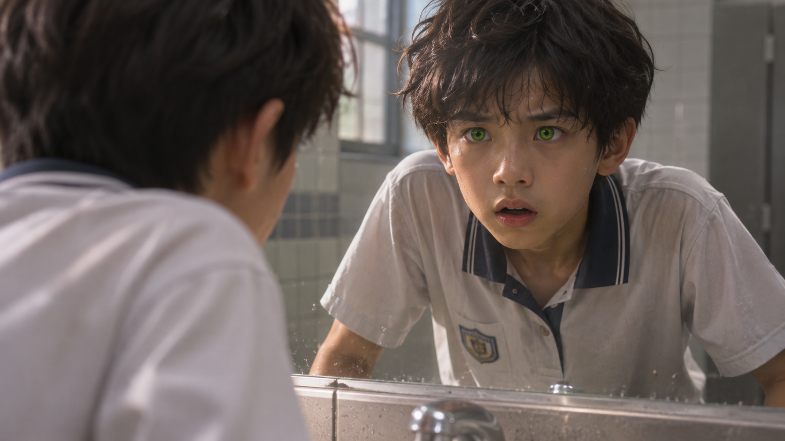
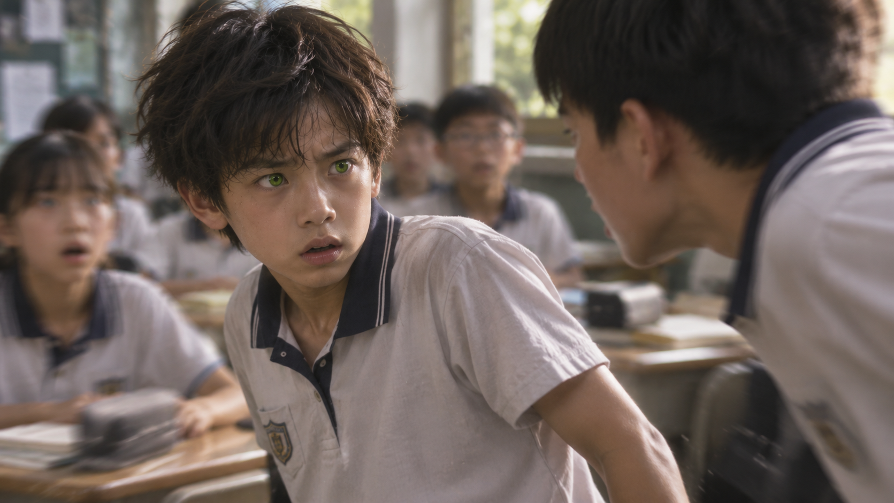
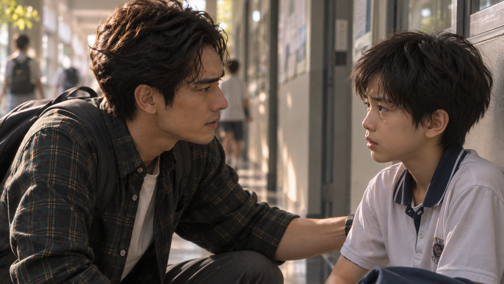
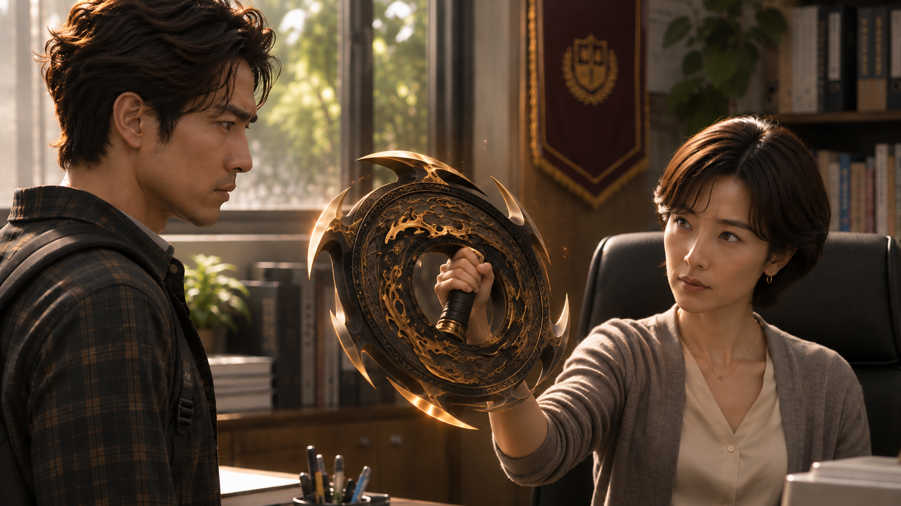
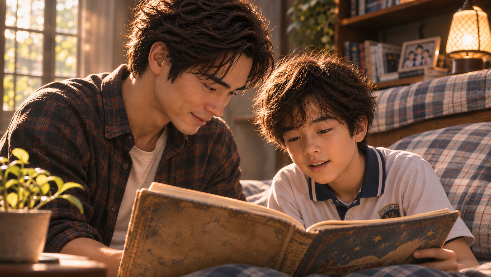

WHITE MAGIC ART STUDIO
第七章
開眼
在景皓接到學校電話之前，昱鎧正和同學們結束早晨的打掃，準備迎接今天的第一堂課。
「昱鎧！」
小安抱著書包，興沖沖地湊了過來。
「我今天帶了《火影忍者》第二十三集！」
「真的假的！」
昱鎧眼睛一亮。
「真的啦！等一下下課借你，跟上次一樣，看完再還我就好。」
「好啊！謝啦！」
小安笑著跑回座位，準備把漫畫拿出來。
昱鎧則繼續整理桌上的課本。
在班上，他算是個讓老師放心的孩子。雖然不是特別活躍的類型，但待人親切、做事認真，同學有什麼需要幫忙的地方，也經常會想到他。
「……奇怪？」
不遠處傳來小安困惑的聲音。
昱鎧抬起頭。
只見小安正彎著腰，不斷翻找抽屜。
「怎麼了？」
「我的漫畫不見了！」
「你不是說有帶？」
「有啊！我明明就放在這裡！」
小安索性把抽屜裡的東西一樣樣拿出來。
課本、鉛筆盒、作業簿。
就是沒有漫畫。
「會不會忘在家裡了？」
「不可能啦！我剛剛還有拿出來裝書套耶！」
小安急得快哭了。
就在這時——
噹——噹——噹——
上課鐘聲響起。
同學們陸續回到座位。
昱鎧拍了拍小安的肩膀。
「先上課啦。等一下下課，我陪你一起找。」
「……好吧。」
小安垂頭喪氣地坐了回去。
不久後，教室門被推開。
「各位同學，早安！」
班導王詩涵抱著課本走上講台。
「老師早！」
「好，大家把國語課本拿出來，翻到第七頁。」
教室裡響起一陣翻書聲。
詩涵轉身，在黑板上寫下今天的課文標題。
昱鎧拿起鉛筆，正準備抄寫。
忽然，他眨了眨眼。
黑板上的字，竟開始變得模糊。
他揉了揉眼睛。
奇怪……
明明昨天才剛退燒。
怎麼今天又不舒服了？
就在他試著重新看清黑板時，一道聲音突然響起。
『好無聊……』
昱鎧愣了一下。
誰在說話？
『這個補習班早就教過了。』
『早餐還沒吃，好餓喔……』
『今天中午不知道吃什麼。』
一道接著一道。
聲音從四面八方湧來。
有男生，也有女生。
有些清楚得像是在耳邊說話，有些卻模糊得聽不清楚。
昱鎧忍不住轉頭。
可是教室裡，除了正在講課的老師，根本沒有人開口。
『等一下下課要去打球……』
『好想睡覺。』
『昨天的作業是不是忘記交了？』
「……！」
昱鎧猛地摀住耳朵。
聲音卻沒有停止。
反而越來越清楚。
他低下頭，努力讓自己冷靜。
不行……
頭好暈。
「梁昱鎧？」
講台上的詩涵注意到他的異樣。
「你怎麼了？」
昱鎧抬起頭。
「老師……」
他猶豫了一下。
「我想去廁所。」
「好，快去快回。下次記得上課前先去喔！」
「好……」
昱鎧立刻起身，快步走出教室。
走廊上的腳步聲逐漸遠去。
詩涵望著他的背影，微微皺眉。
但很快便重新轉向黑板。
「好，我們繼續。」
廁所裡
水龍頭被轉開。
嘩啦——
昱鎧捧起冷水，往臉上潑了好幾次。
冰涼的水沿著臉頰滴落。
他雙手撐在洗手台邊，低著頭喘氣。
終於……
那些聲音消失了。
「呼……」
他慢慢抬起頭。
然而，就在視線對上鏡子的瞬間——
昱鎧整個人僵住。
鏡子裡的自己，雙眼竟泛著鮮明的綠光。

「……咦？」
他向前靠近。
鏡中的瞳孔，確實變成了綠色。
「我的眼睛……」
昱鎧連忙揉了揉眼睛。
再次睜開時——
一切又恢復正常。
他呆呆地望著鏡子。
「……我是不是還沒睡醒啊？」
昱鎧摸了摸自己的額頭。
沒有發燒。
可是剛才那些聲音……
還有眼睛……
他越想越不安。
最後，只能勉強安慰自己。
「應該……只是太累了吧？」
他關掉水龍頭，轉身走出廁所。
第一節下課。
昱鎧才剛回到座位，小安便急急忙忙跑了過來。
「昱鎧！」
「怎麼了？」
「真的找不到啦！」
小安眼眶泛紅。
「那本漫畫是我昨天才買的……」
昱鎧皺起眉。
「你有沒有問過其他同學？」
「問過了，大家都說沒看到。」
「那不然我們去找老師——」
話還沒說完。
昱鎧的視線突然一晃。
『怎麼辦……那本漫畫才剛買沒多久……』
他怔住。
又來了？
『今天中午到底吃什麼啊？』
『放學要不要去便利商店……』
『只要藏到放學……小安應該就不會發現了。』
昱鎧猛地抬頭。
最後那種聲音……
他認得。
是陳齊軒！
昱鎧立刻轉向教室後排。
齊軒正坐在自己的位置上，低頭整理書包。
「陳齊軒！」
突如其來的喊聲，讓附近幾名同學轉過頭。
齊軒抬起臉。
「幹嘛？」
「你是不是拿了小安的漫畫？」
齊軒愣了一下。
「蛤？什麼漫畫？」
「《火影忍者》啊！」
「我哪知道！」
「可是你剛剛明明說——」
昱鎧突然停住。
不對。
齊軒剛剛根本沒有開口。
可是……
那個聲音明明就是他的！
「你是不是把漫畫藏在書包裡？」
齊軒的表情變了。
「你有病喔？不要亂講啦！」
「那你讓我看啊！」
「憑什麼？」
昱鎧咬了咬牙。
下一秒，他快步走到齊軒桌旁，伸手拉開書包。
「喂！你幹嘛啦！」
齊軒急忙站起身。
但昱鎧已經從裡面抽出一本包著透明書套的漫畫。
封面上，赫然印著《火影忍者》。
「找到了！」
小安睜大眼睛。
「那是我的！」
附近的同學紛紛圍了過來。
齊軒臉色漲紅。
「你、你憑什麼翻我書包！」
「因為你偷拿小安的漫畫啊！」
「我才沒有偷！」
「那為什麼會在你書包裡？」
「我……」
齊軒一時語塞。
周圍的目光讓他更加難堪。
「還我啦！」
他猛地伸手，想搶回漫畫。
昱鎧下意識往後退了一步。
「這又不是你的！」
「你很煩耶！」
齊軒突然揮拳。
「小心！」
小安驚叫出聲。
然而——
在昱鎧眼裡，齊軒的動作竟然慢了下來。
不只是拳頭。
連對方肩膀的轉動、身體重心的變化，都變得異常清楚。
昱鎧幾乎沒有思考。
只是本能地偏過頭。
拳頭擦著他的臉頰揮空。

齊軒失去平衡，踉蹌了一步。
「……咦？」
昱鎧愣住。
剛才……
那是怎麼回事？
「可惡！」
齊軒再次衝了過來。
昱鎧下意識伸手。
一把扣住對方的手腕，順勢將他的身體壓向地面。
砰！
齊軒跌坐在地。
昱鎧仍緊緊抓著他的手。
兩人同時愣住。
「……」
教室裡瞬間安靜下來。
幾秒後——
「嗚哇啊啊啊！」
齊軒放聲大哭。
昱鎧嚇了一跳，連忙鬆手。
「等、等等！我不是故意的！」
可是齊軒已經哭得停不下來。
周圍的同學全都瞪大眼睛。
有人看著齊軒。
有人看著昱鎧。
誰也沒想到，平常溫和的梁昱鎧，竟然會突然做出這樣的動作。
「梁昱鎧！」
一道嚴厲的聲音從教室門口傳來。
昱鎧猛地轉頭。
王詩涵站在門邊。
她的目光落在齊軒身上，又緩緩移向昱鎧。
「你們在做什麼？」
昱鎧張了張嘴。
卻不知道該怎麼解釋。
因為就在剛才——
他又看見了。
自己的雙眼，倒映在教室窗戶上的那抹綠光。
學務處
「昱鎧！」
景皓急急忙忙推開學務處的門。
一看見兒子坐在椅子上，他立刻走了過去。
「你沒事吧？」
景皓蹲下身，仔細查看昱鎧的臉。
「有沒有哪裡受傷？」
「爸……」
「是不是有人欺負你？」
「梁先生？」
一旁的訓導老師站起身。
「您是梁昱鎧的父親嗎？」
「對，我是！」
景皓連忙轉頭。
「老師，不好意思，請問到底發生什麼事？」
「今天下課時，班上有兩名學生發生衝突。」
「昱鎧被打了？」
老師稍微停頓。
「根據現場同學的說法，另一名學生確實先揮了拳，但昱鎧也動手將對方壓制在地。」
景皓愣住。
「……昱鎧？」
他重新看向兒子。
「你跟同學打架？」
昱鎧低著頭。
沒有回答。
「這……」
景皓一時難以置信。
「老師，我兒子平常連螞蟻都捨不得傷害，會不會有什麼誤會？」
「梁先生，我們已經向幾位在場學生確認過。」
老師將紀錄放在桌上。
另外，昱鎧擅自翻動同學的書包，這件事也需要提醒。
景皓皺起眉。
「翻書包？」
「是的。雖然最後確實找到了另一位同學遺失的漫畫，但這樣的處理方式並不適當。」
老師看了看昱鎧。
「至於肢體衝突，我們會再分別與兩位同學談話，釐清責任。今天先請家長帶回去好好溝通。」
景皓沉默片刻。
「……我知道了。」
他輕輕按住昱鎧的肩膀。
「走吧。」
走出學務處後，景皓一直沒有說話。
直到兩人來到走廊盡頭，他才停下腳步。
「昱鎧。」
「……嗯？」
「你跟爸爸說實話。」
景皓蹲下身，與兒子平視。
「到底發生什麼事？」
昱鎧低著頭。
「是齊軒先打我的……」
「然後呢？」
「我就……」
他看了看自己的雙手。
「我也不知道為什麼，突然就抓住他了。」
景皓皺眉。
「昱鎧，爸爸知道你不是故意要傷害別人。」
他停頓了一下。
「但就算發現同學拿了別人的東西，也不能直接翻他的書包，更不能讓事情變成打架，知道嗎？」
「……知道。」
「下次遇到這種事，要先找老師幫忙。」
昱鎧點點頭。
卻沒有露出平常那種乖巧的笑容。
景皓察覺到他的異樣。
「怎麼了？」
昱鎧沉默了好一會兒。
「爸……」
「嗯？」
「我今天真的很奇怪。」
「哪裡奇怪？」
昱鎧抬起頭。
眼神裡帶著不安。
「我好像……可以聽見別人在想什麼。」
景皓的表情微微一變。
「……什麼？」
「上課的時候也是，下課的時候也是。」
昱鎧越說越急。
「明明大家都沒有講話，可是我就是聽得到！」
他抓住景皓的衣袖。
「而且……」
「而且什麼？」
「我的眼睛……」
昱鎧低下頭。
「變成綠色了。」
景皓整個人僵住。
「……綠色？」
昱鎧點頭。
「我在廁所照鏡子的時候看到的。」
他抬起臉。
「爸，我是不是生病了？」
景皓望著兒子。
那雙熟悉的眼睛，此刻正因為害怕而微微顫動。
他伸手將昱鎧攬進懷裡。
「沒事。」
景皓輕輕拍著他的背。
「先別怕。」
「可是……」
「爸爸在這裡。」
昱鎧慢慢安靜下來。
景皓卻無法平靜。
木瞳術。
那是木之聖術師才可能覺醒的能力。
而且……
讀心？
他自己從來沒有擁有過這種天賦。
難道昱鎧……
不。
還不能告訴他。
至少現在還不行。
「……爸？」
景皓一怔。
昱鎧慢慢從他懷裡抬起頭。
「什麼事情不能告訴我？」
景皓愣住。
「什麼？」
「你剛剛說的啊。」
昱鎧望著他。
「你說……還不能告訴我。」
景皓的心猛地一沉。
「我沒有說話啊。」
「可是我聽到了！」
昱鎧皺起眉。

「明明就是你的聲音！」
景皓下意識看向兒子的眼睛。
那雙瞳孔深處——
一抹綠光，正在緩緩浮現。
「……昱鎧？」
『不行。』
景皓努力壓住心中的慌亂。
『現在絕對不能告訴他。』
「又來了！」
昱鎧猛地抓住他的手。
「爸！你又說不能告訴我！」
「我沒有說！」
「可是我真的聽到了！」
「昱鎧！」
景皓的聲音突然提高。
「爸爸說沒有就是沒有！」
昱鎧整個人一震。
他慢慢鬆開手。
「……爸？」
景皓怔住。
兒子看著他的眼神，陌生得讓他心口一緊。
那一瞬間——
他彷彿看見了很多年前的自己。
同樣站在父親面前。
同樣想知道一個答案。
卻只得到一句不容反駁的斥責。
景皓張了張嘴。
「昱鎧，我……」
「梁先生！」
一道女聲從走廊另一端傳來。
兩人同時轉頭。
王詩涵正朝他們走來。
「不好意思，打擾一下。」
她看了看昱鎧，又看向景皓。
「我是昱鎧的班導，王詩涵。」
「王老師……」
「有件事情，我想單獨跟您談談。」
教師辦公室
辦公室裡，只剩下景皓與王詩涵兩人。
昱鎧則坐在外頭的長椅上等候。
「梁先生。」
詩涵坐在辦公桌後，雙手交疊。
「其實從第一次見到昱鎧，我就覺得這孩子有些特別。」
景皓沒有回答。
「他很聰明，也很懂得照顧別人。」
詩涵稍微停頓。
「只是我一直很好奇，他自己似乎完全不知道那份特別究竟來自哪裡。」
景皓抬起眼。
「王老師。」
他的語氣變得冷淡。
「如果妳找我來，只是為了稱讚我兒子，那我很感謝。」
他站起身。
「不過昱鎧昨天才剛退燒，今天又發生這些事，我想先帶他回去休息。」
詩涵沒有阻止。
只是靜靜看著他走向門口。
就在景皓伸手準備開門時——
咻！
一道黑影突然從身旁掠過。
鏘！
黑色圓盤釘入門板。
景皓猛地停住。
那不是普通的飛盤。
圓盤邊緣鋒利，盤身刻著暗金色、宛如火焰般的紋路。
更重要的是——
那股熟悉的聖術氣息。
「……術器？」
景皓緩緩轉身。
詩涵仍坐在原位。
她伸出手。
黑色圓盤微微震動，隨即脫離門板，旋轉著飛回她掌中。

景皓的眼神沉了下來。
「妳是聖術師？」
詩涵沒有否認。
「我們火之聖術師，對周圍生命散發的能量變化特別敏感。」
她將圓盤放在桌上。
「尤其是熱能。」
景皓沒有說話。
「從第一次見到昱鎧開始，我就察覺到，他的能量狀態與一般人不同。」
詩涵抬起頭。
「今天，我又親眼看見他的眼睛變成綠色。」
景皓的表情微微一變。
「……木瞳術。」
「沒錯。」
詩涵點頭。
「木之聖術師獨有的能力。」
她看著景皓。
「所以我想問你，梁先生。」
「……」
「你打算瞞著他多久？」
景皓皺起眉。
「這是我們家的事。」
「我知道。」
「那妳就不應該——」
「可是今天，昱鎧已經因為不了解自己的能力，和同學發生衝突了。」
景皓停住。
詩涵的語氣沒有提高。
「如果下次，他在更危險的情況下覺醒呢？」
「……」
「如果有一天，他親眼看見惡魔，卻不知道自己為什麼能看見？」
景皓握緊拳頭。
「我會保護他。」
「我相信你會。」
詩涵望著他。
「但你不可能永遠都在他身邊。」
辦公室安靜下來。
過了一會兒，景皓才低聲開口。
「……妳不明白。」
「什麼？」
景皓慢慢坐回椅子。
「我從小就知道自己是聖術師。」
他望向窗外。
「從很小的時候開始，我就必須接受訓練，學會控制自己的力量，還要承擔一堆我根本不明白的責任。」
詩涵安靜地聽著。
「我父親總是告訴我，那是我的使命。」
景皓苦笑了一下。
「可是有時候，我真的很羨慕那些普通人。」
他低下頭。
「不用每天想著自己夠不夠強，不用擔心下一次會遇見什麼惡魔。」
他停頓片刻。
「我只是希望……」
景皓的聲音變得很輕。
「昱鎧能比我多過幾年普通孩子的生活。」
詩涵望著他。
良久，才緩緩開口。
「梁先生。」
「……嗯？」
「你知道嗎？」
她低頭看著桌上的黑色圓盤。
「我從小在孤兒院長大。」
景皓抬起頭。
「小時候，我經常看見一些別人看不見的東西。」
詩涵的神情平靜。
「我告訴老師，告訴照顧我的大人。」
「可是沒有人相信。」
她輕輕笑了一下。
那笑容卻沒有多少喜悅。
「有些人覺得我在說謊，有些人覺得我精神出了問題。」
她望向景皓。
「直到後來，我遇見一位聖術師牧師，才終於知道自己究竟是什麼人。」
景皓沉默。
「所以我很羨慕昱鎧。」
詩涵繼續說。
「至少他有一位知道真相、也願意保護他的父親。」
她稍微停頓。
「可是梁先生……」
「……」
「保護他，不應該讓他連自己是誰都不知道。」
景皓垂下眼簾。
腦海裡，忽然響起昱鎧剛才的聲音。
『爸，我是不是生病了？』
還有那雙充滿恐懼的眼睛。
他深吸一口氣。
「……我只是想讓他過得平凡一點。」
「我知道。」
詩涵輕聲回答。
「但對我們而言，平凡也許不是假裝自己沒有力量。」
景皓抬起頭。
「而是知道自己擁有這份力量以後，仍然能安心地生活。」
窗外傳來下課鐘聲。
兩人一時都沒有再說話。
良久。
景皓才低聲開口。
「……謝謝妳，王老師。」
詩涵微微一笑。
「不用客氣。」
她看了一眼門口。
「昱鎧還在等你。」
景皓點頭，起身離開。
回家的路上
車內很安靜。
昱鎧坐在副駕駛座旁的後座，望著窗外不斷倒退的街景。
景皓握著方向盤。
好幾次，他想開口。
卻又不知道該從哪裡說起。
紅燈亮起。
車子緩緩停下。
景皓從後照鏡看了兒子一眼。
昱鎧仍然沒有說話。
那副模樣，讓景皓想起自己小時候。
每當與父親發生爭執，他也總是這樣坐在車裡。
望著窗外。
假裝自己什麼都不在乎。
景皓慢慢收回視線。
這一次……
他不想再讓沉默成為答案。
比克花店
「你們回來啦？」
碧雲正站在工作檯前，整理剛送來的花材。
她抬起頭。
「咦？昱鎧？」
昱鎧沒有回答。
只是低著頭，快步走上二樓。
碧雲愣了一下。
「這孩子怎麼了？」
景皓將車鑰匙放到一旁。
「今天在學校跟同學發生衝突。」
「蛤？昱鎧跟人打架？」
碧雲睜大眼睛。
「怎麼可能！」
「我也嚇了一跳。」
景皓苦笑。
「不過……事情有點複雜。」
碧雲放下手裡的花束。
「他昨天才剛退燒，今天又遇到這種事，不會太累了吧？」
「我會注意。」
景皓看了看樓梯。
「碧雲姐，今天下午我想請個假。」
「陪昱鎧？」
「嗯。」
「去吧去吧！」
碧雲揮了揮手。
「店裡有我就好。孩子比較重要！」
「謝謝妳。」
景皓點點頭。
隨即轉身上樓。
二樓。
昱鎧的房門緊閉。
景皓站在門前。
一手抱著盆栽，另一隻手拿著一本有些泛黃的舊繪本。
他低頭看了看那本書。
停頓片刻。
扣、扣。
「昱鎧？」
房裡沒有回應。
「爸爸可以進去嗎？」
過了一會兒。
「……嗯。」
景皓輕輕推開門。
昱鎧正側躺在床上，背對著門口。
景皓走進房間，將盆栽放在書桌旁。
接著坐到床沿。
「昱鎧。」
「……」
「爸爸有件事想跟你說。」
昱鎧慢慢轉過身。
景皓看著兒子。
「對不起。」
昱鎧愣了一下。
「……什麼？」
「剛才在學校，爸爸不應該對你那麼大聲。」
景皓低下頭。
「你明明已經很害怕了，我卻沒有好好聽你說話。」
昱鎧望著他。
「可是……你剛剛真的很兇。」
「嗯。」
景皓點頭。
「爸爸知道。」
他伸手摸了摸兒子的頭。
「對不起。」
昱鎧沉默了一會兒。
終於慢慢坐起身。
「爸。」
「嗯？」
「你是不是有事情瞞著我？」
景皓沒有立刻回答。
他低頭看向手中的繪本。
「……是。」
昱鎧睜大眼睛。
「真的？」
「嗯。」
景皓輕輕嘆了口氣。
「而且是一件很重要的事。」
「跟我有關嗎？」
「跟我們都有關。」
昱鎧眨了眨眼。
原本還有些難過的表情，逐漸被好奇取代。
「那……」
他忽然盤腿坐好。
「爸爸，我問你喔。」
「什麼？」
昱鎧一臉認真。
「我是不是忍者？」
「……蛤？」
景皓愣住。
昱鎧立刻指向自己的眼睛。
「因為我今天眼睛會變色耶！」
他越說越興奮。
「而且齊軒打過來的時候，我真的覺得他的動作變超慢！」
「……」
「就跟漫畫裡一樣！」
景皓看著兒子。
幾秒後，終於忍不住笑了出來。
「哈哈……」
「爸！我很認真耶！」
「好好好，爸爸知道。」
景皓努力忍住笑意。
「不過很可惜。」
他伸手輕輕點了點昱鎧的額頭。
「梁昱鎧，你不是忍者。」
「蛤——」
昱鎧失望地垂下肩膀。
景皓卻微微一笑。
「但是……」
昱鎧立刻抬頭。
「但是什麼？」
景皓將那本泛黃的繪本放在兩人之間。
「你確實跟一般人有一點不一樣。」
昱鎧看著封面。
「這是什麼書？」
「一本爸爸很久以前就想給你看的書。」
景皓輕輕撫過封面。
「只是一直不知道，什麼時候才適合。」
昱鎧抬起頭。
「那現在可以看了？」
景皓望著兒子。
片刻後，點了點頭。
「嗯。」
他翻開第一頁。
「來吧。」
景皓笑了笑。
「今天的床邊故事……」
他看向昱鎧。
「可是真的喔。」
書頁緩緩翻開。
故事，開始了。
